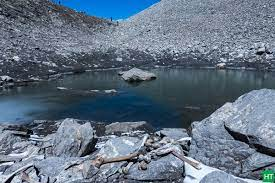

Amazing Fun Facts about India
1. Varanasi is the oldest and continually inhabited city in the world

Also known as Kashi or Benaras, Varanasi is one of the oldest cities in the world that is brimming with thousands of years of history and still thriving. Located on the banks of the river Ganges, Varanasi is a sacred city in Uttar Pradesh that serves as an important center of Hindu pilgrimage, poetry, culture, and mysticism. In the words of Mark Twain, “It is older than history, older than tradition, older even than legend, and looks twice as old as all of them put together.”
Varanasi is a picturesque place that holds immense significance among tourists for its cultural significance and the river Ganges. There are over 100 ghats in Varanasi, with stairs leading to the riverfront. Seeing sadhus and priests worshipping or meditating in the morning and evening hours is a common spectacle. However, the Manikarnika Ghat is the most attention-grabbing due to its elaborate crematory rituals.
2. The first country to mine and lead diamond production
Per the records, India has been the only source of diamonds in the world for over 1000 years since the 4th century BC. This is one of the proudest facts about India. The diamonds were mined from the alluvial deposits of the Krishna Nagar Delta. It was not till the 18th century that diamonds were found in Brazil. Even though India is not the major producer of diamonds in the world since the 1900s, diamond mining is still taking place. The most popular regions for industrial-scale diamond mining are Panna in Madhya Pradesh, followed by Golconda in Andhra Pradesh, and Mahasamund in Chhattisgarh.
Cows have a sacred status
India is probably the only country in the world where the humble cow has acquired a status no less than God and is revered. The legend says that cows have been a part of important rituals in India since the 4th century BC. It has a lot to do with Lord Krishna, who has been portrayed as a cowherd in ancient epics. All products derived from cows, such as milk, curd, ghee, etc., are also valued. There are countless Gaushalas or Cow Shelters in India where cows are fed and taken care of.
4. The largest number of vegetarians in the world
In the list of unknown facts about India, this is not very widely known. India is home to the largest number of vegetarians in the world. Religion is the main motivation behind vegetarianism in India, with over 81% of the adult population refraining from eating meat on certain days. Also, a vast majority of the Jain and Buddhist population in India avoid eating meat and follow a plant-based diet. It would not be a surprise to come across vegetarian KFC and McDonald’s menus in India, among other global food chains.
5. The popular game ‘Snakes and Ladders’ is India’s contribution to the world
India has been known as home to several board games, especially the classic one – Snakes and Ladders. Most of us have played an odd version of this game, never really knowing about its true origins. The legend has it that its inception goes back to the early 2nd century BC, when it was known as Mokshapat or Moksha Patamu. Another legend says that this board dice game was invented by Swami Gyandev in the 13th century BC. The game was a lesson in morality for kids, and it pointed toward the effects of Karma (destiny) and Kama (desire). Eventually, the British version of this game was published in 1943 by the Milton Bradley Company, under the name Chutes and Ladders.
6. India stands third for its hefty population of billionaires
Another amazing fact about India is that it has the third largest population of billionaires in the world after the US and China, per Forbes’ 35th annual list of billionaires. Reliance Industries Limited chairman Mukesh Ambani tops the list of Asia’s richest men, followed by Adani Group chairman Gautam Adani, and then the Founder of HCL Technologies, Shiv Nadar. As impressive as it sounds, India has over 140 billionaires and counting.
7. The largest religion in India, Hinduism is the oldest in the world
India has the largest Hindu population in the world, with over 966.3 million individuals identifying as Hindu, according to the 2011 census. With over 94% of the global Hindu population, India stands tall as the Hindu hotspot in the world, with its roots dating back over 5000 years. There is no known founder of Hinduism, but it flourished as soon as the Vedic philosophies emerged around 1500 to 500 BC. However, the rituals and cultural phenomena were known to become widespread between 500 BC and 300 AD. Contrary to some popular beliefs, Hinduism is not pure polytheism. It believes in Brahma, the creator.
8. India is the largest spice producer globally
One of the most amazing facts about India is its contribution to the world spice market. Over 70% of different varieties of spices in the world are grown in India, with the most popular spices, namely cardamom, cinnamon, saffron, turmeric, nutmeg, vanilla, and cloves. Besides this, India is also the largest consumer of spices in the world. No wonder Indian kitchens are stacked with versatile spices that are used in everyday cooking without fail. Also, there is mention of spices to cure common ailments in the Vedas, which is an important part of Indian culture. If you ever want to get immersed in aromas and a complex labyrinth of spice lanes, then Khari Baoli in Delhi is the place to visit. Touted as the largest spice market in Asia, it is overwhelmingly beautiful and a delight to the senses. However, do take a guide along with you if it is your first time.
9. The magnetic hill that defies gravity
Not many people know about Magnetic Hill, but it is probably one of the unique facts about India. Magnetic Hill outrightly defies gravity. Yes, you heard it right! Also known as Gravity Hill, it is located around 30km from Leh. This is actually a part of the road of the Leh-Kargil highway. Many tourists flock to see this mysterious phenomenon, and you can spot some signs with proper instructions that will help you experience and make the most of it. Instead of rolling downhill, your vehicle will start going uphill. All this will happen when your car is neutral. Many theories run amok, explaining this strange phenomenon. One scientific theory concludes that the hill has a strong magnetic force that pulls the vehicles downward. Another theory suggests the presence of an optical illusion. The landscape creates an illusion for the eyes, obstructing the horizon. This makes it hard for us to differentiate the slopes of the hill. The lack of a flat surface or horizon makes it look like it is coming downhill while the opposite is happening. If you are planning a Leh Tour and want to decode the mystery of Magnetic Hill, the months between July and October are your best bet.
10. Mystery glacial lake with skeletons
Also known as Skeleton Lake, Roopkund is a one-of-a-kind high-altitude glacial lake located in the Indian Himalayas. Seated at a height of 16,499 above sea level, Roopkund is a mysterious lake in the state of Uttarakhand. It is essentially a small water body that is home to the skeletons of hundreds of individuals of unknown origin. This scenic trek lures tourists from around the globe for its skeletal remains. It was discovered in 1942 when a British forest ranger H K Madhwal spotted a skeleton floating in the lake. Initially, it was suspected to be part of the Japanese invasion forces during World War II. However, the carbon dating revealed that the skeletons were more than 1200 years old. The skeletons shared similar wounds to the head, but the cause of the death remains unknown as they died during different periods. It is concluded that they might have died suddenly due to a hailstorm, but it is still a mystery what so many people were doing at such high altitudes. The total distance of the Roopkund trek is roughly 53 km, and it may take you around 5 to 7 days to complete this trek.